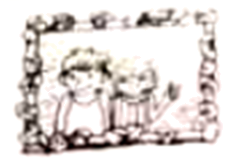

2023年北京中考英语 第24—26题
B
Betty was excited to show her brother David the basket filled with seashells. But David was busy helping Dad get everything back into the car. “What are you going to do with those useless things?” he said. “You can’t take them home.”
“But I want these seashells,” Betty said unhappily. “Each one is a different shape and size. They are all special.”
Suddenly, David saw the water rising along the beach. He shouted to Betty, “The waves （海浪）are about to take your toys!” As Betty ran to get her things, she called to David, “Please put my seashells into the car!”
David was putting one of the beach chairs into the car when his foot accidentally knocked over the basket. As David lifted a heavy box, he slipped（滑倒）and dropped the box right on top of the seashells, breaking most of them into pieces.
Betty came back with her toys. When she saw her seashells broken, she began to cry. David started to pick up the seashells and place them carefully back into the basket.
Dad tried to explain to Betty that it was an accident. But Betty was still upset. David also felt sad. He thought about what he could do to make it up to his sister. When he got home, he had a perfect idea.
The next morning David waited for Betty with the basket of seashells and some strong glue. He also had a framed（装框的）photo of the two of them. Together they looked through the basket and found several seashells that were not broken and could still be used. Then they glued the seashells to the frame.
“I’m really sorry, Betty.” David said. “Yesterday I was very careless with something special to you.”
Betty looked at her brother and smiled. “You’re the best big brother ever!”

24. What did Betty think of the seashells?
A. Clean.B. Useless.C. Expensive.D. Special.
25. Betty began to cry when ________.
A. she slipped and hurt herselfB. she knocked over the basket
C. she saw the broken seashellsD. she told her dad about the accident
26. David glued the seashells to the frame to ________.
A. make it up to his sisterB. develop his painting skill
C. prepare a gift for his dadD. make the picture beautiful